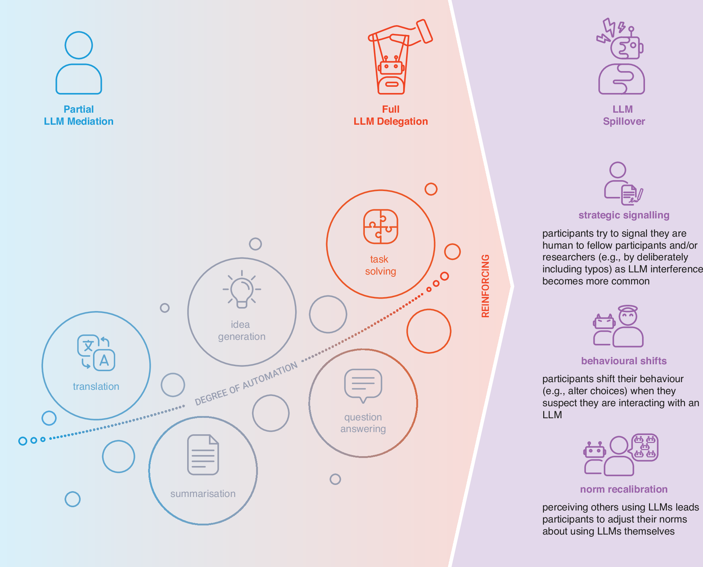

论文资料
Recognising and mitigating LLM Pollution in online behavioural research
尚未取得可核实的完整摘要或全文
尚未取得可核实的完整摘要或全文。取得完整资料并通过核验后，这个地址会更新为图文解读。
原图未改动。以下图注来自标注的来源，不据此补写摘要未报告的实验结论。
已取得的论文原图


原文图注与出处
Partial LLM Mediation refers to cases where participants use LLMs for translation, idea generation, or performance gains. Full LLM Delegation involves the use of agentic tools or plugins to automate participation entirely. LLM Spillover refers to normative or behavioural shifts prompted by participants' beliefs about LLM involvement, regardless of whether any is present. These variants can interact and reinforce one another, compounding their threat to research validity and inference. Illustration by H. Jahani.
Rilla, Raluca et al.
原文图页 · CC BY 4.0